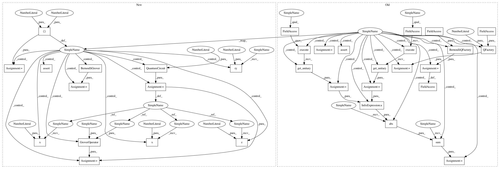

e44bb209a41d9f85a0f115b21b3b150bff65ee66,test/aqua/test_amplitude_estimation.py,TestBernoulli,test_mlae_circuits,#TestBernoulli#Any#,278
Before Change
// Q^(2^j) operator
if efficient_circuit:
qae.q_factory = BernoulliQFactory(qae.a_factory)
circuit.ry(2 * 2 ** power * angle, q_objective[0])
else:
q_factory = QFactory(qae.a_factory, i_objective=0)
for _ in range(2**power):
q_factory.build(circuit, q_objective)
actual_circuits = qae.construct_circuits(measurement=False)
for actual, expected in zip(actual_circuits, circuits):
expected_unitary = self._unitary.execute(expected).get_unitary()
actual_unitary = self._unitary.execute(actual).get_unitary()
diff = np.sum(np.abs(actual_unitary - expected_unitary))
self.assertAlmostEqual(diff, 0)
@ddt
class TestProblemSetting(QiskitAquaTestCase):
After Change
Test the circuits constructed for MLAE
prob = 0.5
for k in [2, 5]:
qae = MaximumLikelihoodAmplitudeEstimation(k, state_preparation=BernoulliStateIn(prob))
angle = 2 * np.arcsin(np.sqrt(prob))
// compute all the circuits used for MLAE
circuits = []
// 0th power
q_objective = QuantumRegister(1, "q")
circuit = QuantumCircuit(q_objective)
circuit.ry(angle, q_objective)
circuits += [circuit]
// powers of 2
for power in range(k):
q_objective = QuantumRegister(1, "q")
circuit = QuantumCircuit(q_objective)
// A operator
circuit.ry(angle, q_objective)
// Q^(2^j) operator
if efficient_circuit:
qae.grover_operator = BernoulliGrover(prob)
circuit.ry(2 * 2 ** power * angle, q_objective[0])
else:
oracle = QuantumCircuit(1)
oracle.x(0)
oracle.z(0)
oracle.x(0)
state_preparation = QuantumCircuit(1)
state_preparation.ry(angle, 0)
grover_op = GroverOperator(oracle, state_preparation)
for _ in range(2**power):
circuit.compose(grover_op, inplace=True)
actual_circuits = qae.construct_circuits(measurement=False)
for actual, expected in zip(actual_circuits, circuits):
self.assertEqual(Operator(actual), Operator(expected))
@ddt
class TestProblemSetting(QiskitAquaTestCase):
In pattern: SUPERPATTERN
Frequency: 3
Non-data size: 34
Instances
Project Name: Qiskit/qiskit-aqua
Commit Name: e44bb209a41d9f85a0f115b21b3b150bff65ee66
Time: 2020-09-15
Author: jules.gacon@googlemail.com
File Name: test/aqua/test_amplitude_estimation.py
Class Name: TestBernoulli
Method Name: test_mlae_circuits
Project Name: Qiskit/qiskit-aqua
Commit Name: e44bb209a41d9f85a0f115b21b3b150bff65ee66
Time: 2020-09-15
Author: jules.gacon@googlemail.com
File Name: test/aqua/test_amplitude_estimation.py
Class Name: TestBernoulli
Method Name: test_qae_circuit
Project Name: Qiskit/qiskit-aqua
Commit Name: e44bb209a41d9f85a0f115b21b3b150bff65ee66
Time: 2020-09-15
Author: jules.gacon@googlemail.com
File Name: test/aqua/test_amplitude_estimation.py
Class Name: TestBernoulli
Method Name: test_mlae_circuits
Project Name: Qiskit/qiskit-aqua
Commit Name: e44bb209a41d9f85a0f115b21b3b150bff65ee66
Time: 2020-09-15
Author: jules.gacon@googlemail.com
File Name: test/aqua/test_amplitude_estimation.py
Class Name: TestBernoulli
Method Name: test_iqae_circuits